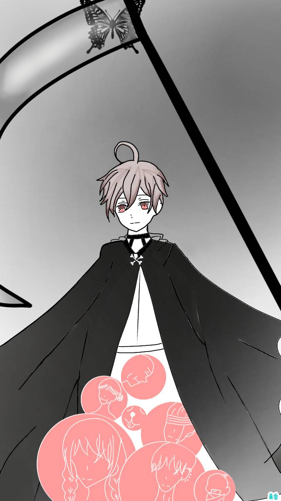

死神 Death
元素水
對應牌7戰車
對應星座天蠍座
牌義死神為生命的另一個破壞的層面，如果沒有這個機制，生命無法新生輪替，
可以說死神清出了空間，讓靈魂有重生的機會，從牌面上，我們可以看到死神手握旗幟，
他的下半身是犬的形象，說明了死神本身只是在執行生命的任務，他的面前有三個驚恐，害怕的人。
他們恐懼死神的未知改變，比對死本身還害怕，其實死神像徵黎明之前的黑暗。對舊有的“放執著”。
關鍵語結束、接納、新生、改變、昇華★暗示某種狀況的結束
牌正面為舊事物劃上休止符，接納新的改變。
牌反面抗拒，和恐懼改變，過著單調，重覆的生活。
現實案例中，死神變成了一張讓人聞風喪膽的牌，
抽到此牌的人往往都會露出驚嚇的表情，我想除了因為此張牌的「命名」之外還有很多來自於「刻板印象」，
死神最常見的解釋就是結束，但結束是有很多種不同的形式，
如:畢業、轉職、感情結束等，用另外種角度來看無非是一種「重生」或「轉化」，
除非問卜者問的是健康方面的問題（若是有此情況出現，建議就醫檢查在下定論），
死神就是我們日常生活中一定會遇到的課題，不論你選擇面對還是逃避，都免不了要承受痛苦與煎熬，
因為人類是一種習慣性動物，要面對突然之間的改變，或是與某人關係突然的結束，一時之間都是手足無措的。
所以面對命運無情的玩笑時，或許我們要做的就是不糾結，不沉溺過去，學會放手，才能開始新的生活。
離開卡牌